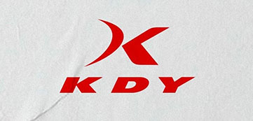

Nuevo Sponsor técnico
Queremos anunciar que el Club Atlético Unión y la empresa argentina KDY, llegaron a un acuerdo para vestir las actividades profesionales de la institución, en un contrato que se extenderá por un año. KDY, de Enrique Vilouta, es una empresa nacional con talleres propios en Berazategui. Su dueño tiene una vasta experiencia en el rubro, es de la familia que ha creado y manejado la marca OLAN.